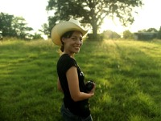
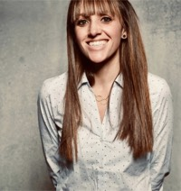

American University
33 people whose festival biography mentions American University. A mention can mean a job, a past job, a grant, a broadcast or an award: read the bio for which.



Sonia KennebeckPanelist, filmmaker, workshop leader · 3 editions, 2017–2021- Caty Borum ChattooModerator, panelist · 2 editions, 2015–2017School of Communication, American University


 Brandon ButlerPanelist · 2024
Brandon ButlerPanelist · 2024 Eric FryerFestival team · 2024
Eric FryerFestival team · 2024
 Claritza JiménezFestival team · 2015
Claritza JiménezFestival team · 2015 Joshua LevinFestival team · 2015
Joshua LevinFestival team · 2015- Robert MaguirePanelist · 2018
- Kelsey Nicole NelsonModerator · 2025
 Roshan Noorzai2026
Roshan Noorzai2026
 Brian WestleyPanelist · 2021
Brian WestleyPanelist · 2021 Marissa WoodsPanelist · 2021
Marissa WoodsPanelist · 2021- Amy YoungFestival team, moderator · 2025
